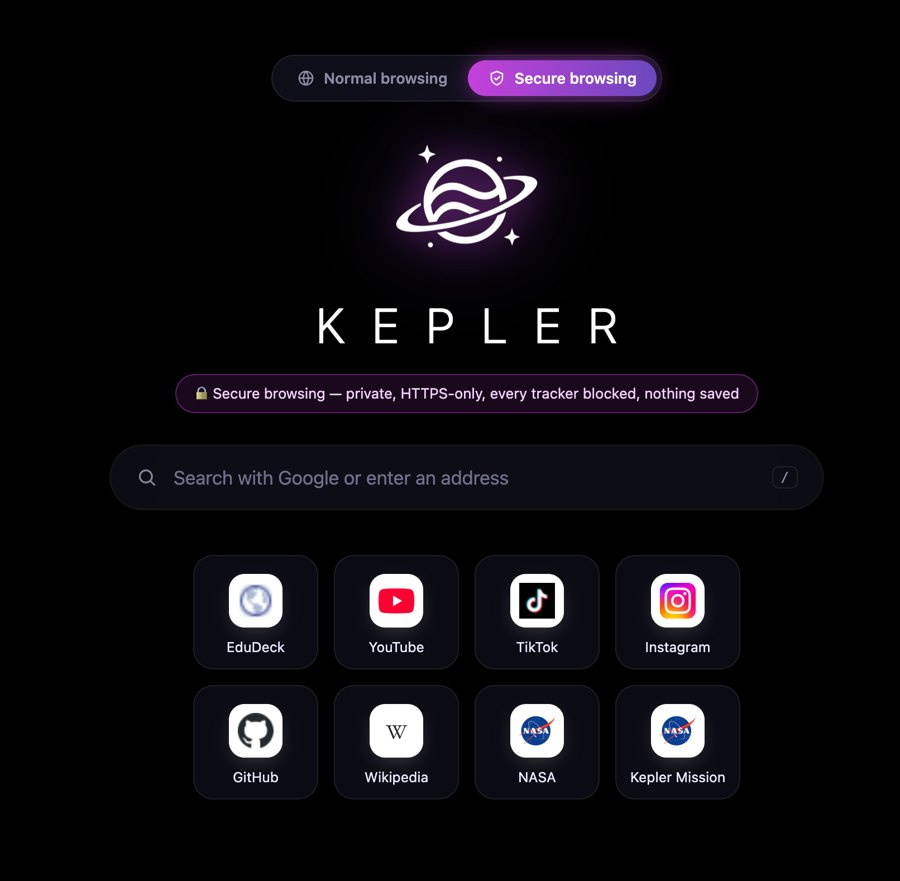
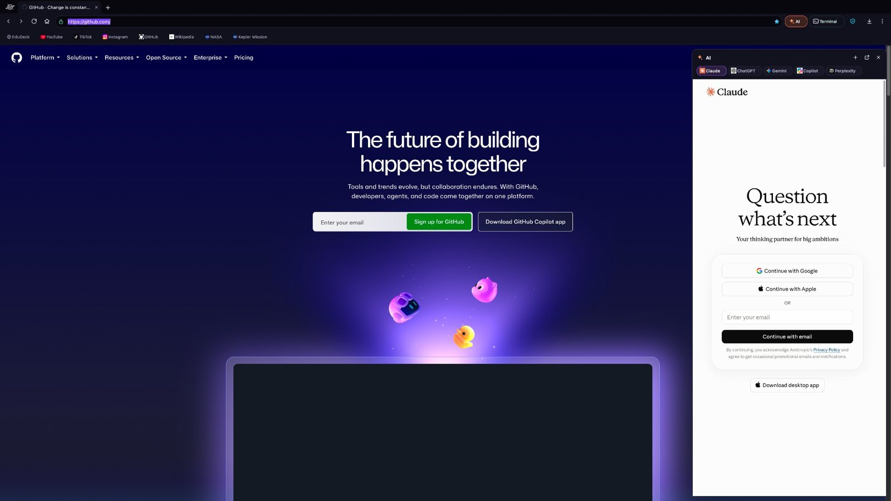
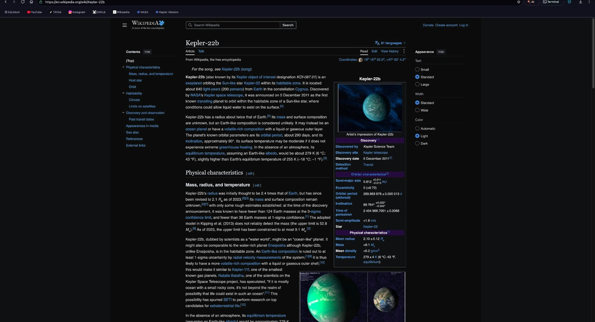

Open source · Audited · v0.9 beta
Kepler is a browser for people who read the source. Every tab runs in its own sealed process, every request is accountable, and the whole thing is a reproducible build you can rebuild yourself in about eleven minutes.



Anonymous by default
Like a mask in a crowd, Kepler makes you indistinguishable. Fingerprint flattening, sealed tabs and optional orbit relays mean the sites you visit see a Kepler user — never you.
Built for liftoff
Rockets don't get a second try, so every stage is tested before it flies. Kepler is built the same way: a Rust engine that starts cold in under a second, and a release pipeline where nothing ships until it's verified.
Ready when you are
Free, open source, and quiet by default.